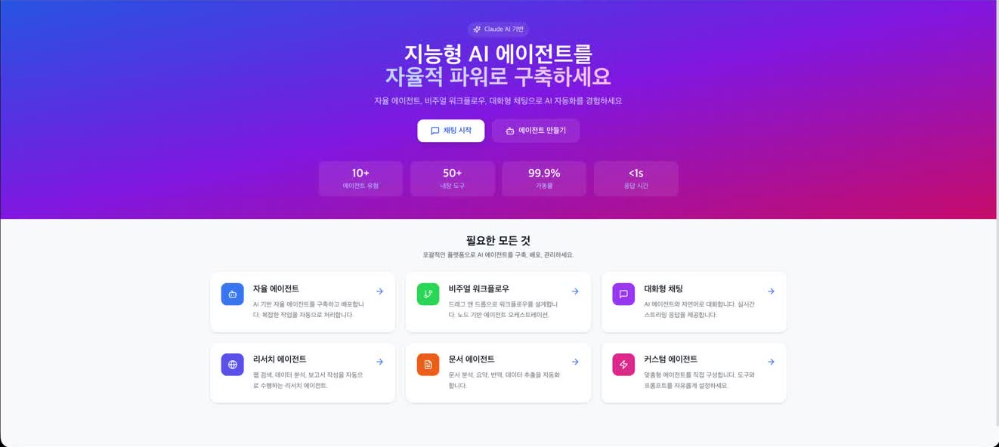
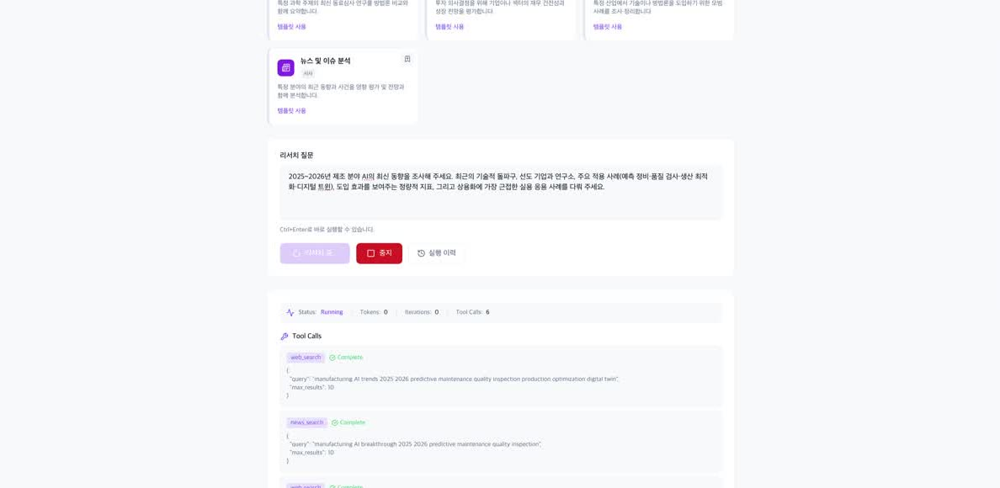
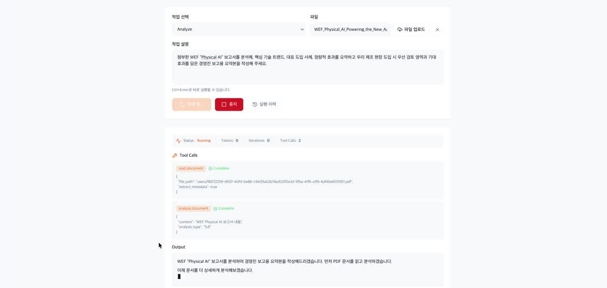
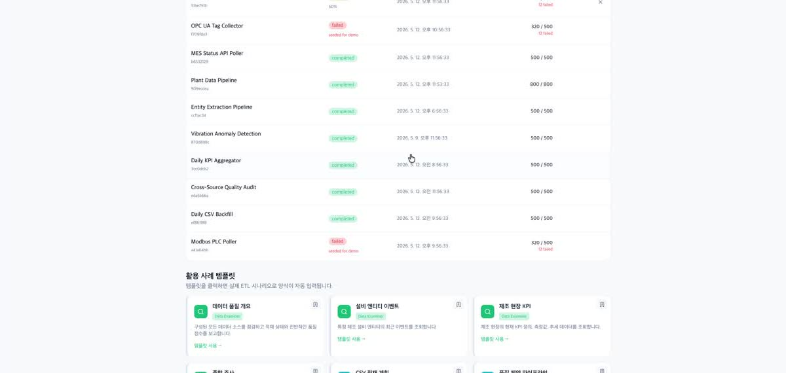
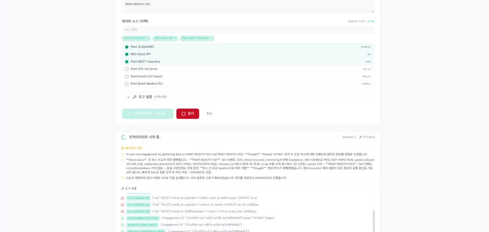
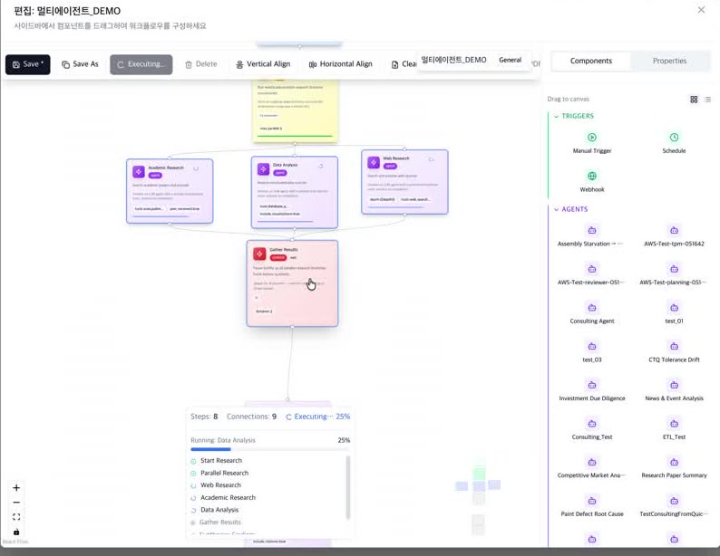

공장 데이터에 직접 연결되어 분석·진단·자동화를 스스로 수행하는 Agentic AI 플랫폼입니다. 흩어진 데이터를 하나로 모으고, 현장 문제를 진단해 조치 방안까지 제안합니다.

데이터 · 지식 · 인력 — 제조 현장의 구조적인 문제는 기존 기술만으로 풀기 어렵습니다.
MES · ERP · PLC · SCADA가 분리 운영되어 통합 분석과 집계가 어렵습니다.
숙련자의 경험과 노하우가 기록되지 않아 인력 이탈과 함께 사라집니다.
품질 · 고장 · 병목의 원인이 서로 얽혀 있어 통합 관리 체계가 필요합니다.
ERD · VectorDB · Knowledge Graph를 ETL로 통합하고, 객체(Object)와 프로세스(Process)를 연결합니다.
기준마다 제각각인 용어와 코드를 하나의 매핑 테이블로 연결합니다.
끊임없이 바뀌는 기준정보를 자동으로 갱신 · 검증합니다.
의미로 연결된 데이터를 즉시 불러와 빠르고 정확하게 판단합니다.
도메인의 개념과 관계를 기계가 오해 없이 이해하도록 정의한 체계
리서치 · 문서 · ETL · 컨설팅 에이전트를 기본 제공하고, 우리 현장에 맞는 에이전트는 코딩 없이 직접 만들 수 있습니다. 각 기능은 데모 영상의 해당 구간에서 확인할 수 있습니다.
조사 주제 설정부터 자료 수집, 분석, 보고서 작성·저장까지 리서치 전 과정을 자율 수행합니다.

데모에서 보기 · 5:30회의자료 · 보고서를 이해하고, 템플릿에 맞춰 DOCX · PDF 문서로 자동 생성합니다.

데모에서 보기 · 4:40CSV · MQTT · OPC UA · DB 등 흩어진 데이터를 AI가 이해하기 쉬운 일관된 데이터로 변환합니다.

데모에서 보기 · 1:20전문가 에이전트 팀이 현장 문제를 분업 진단하고 교차검증합니다.

데모에서 보기 · 3:10평소 일하던 순서를 화면에 끌어다 연결하면 코딩 없이 자동화됩니다.

데모에서 보기 · 6:00MES, OT, DB를 직접 연동해 흩어진 데이터를 하나로 모읍니다.
수집, 분석, 실행을 하나의 플랫폼에서 모두 수행합니다.
추론 과정과 데이터 출처를 기록해 결과의 근거를 보존합니다.
온프레미스와 클라우드 운영 환경을 자유롭게 선택할 수 있습니다.
인터넷 격리 환경에서 단일 명령으로 구동합니다. 데이터가 외부로 나가지 않습니다.
관리형 인프라 기반의 빠른 도입과 자동 확장을 지원합니다.
보안 아키텍처 · 기술 스택 등 상세 내용은 제품 소개서에서 확인할 수 있습니다.